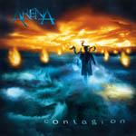

Home Artist links Label link

Arena - Contagion
| Artist: | Arena |
| Title: | Contagion |
| Label: | Verglas |
| Length(s): | 59 minutes |
| Year(s) of release: | 2002 |
| Month of review: | [02/2003] |
Line up
Rob Sowden - vocals
John Mitchell - guitar, backing vocals
Clive Nolan - keyboards, backing vocals
Ian Salmon - bass
Mick Pointer - drums
Tracks
| 1) | Witch Hunt |
|
| 2) | An Angels Falls |
|
| 3) | Painted Man |
|
| 4) | This Way Madness Lies |
|
| 5) | Spectre At The Feast |
|
| 6) | Never Ending Night |
|
| 7) | Skin Game |
|
| 8) | Salamander |
|
| 9) | On The Box |
|
| 10) | Tsunami |
|
| 11) | Bitter Harvest |
|
| 12) | The City Of Lanterns |
|
| 13) | Riding The Tide |
|
| 14) | Mea Culpa |
|
| 15) | Cutting The Cards |
|
| 16) | Ascension |
|
Summary
When Arena first came on the scene, they were, somewhat placatingly, dubbed Mick Pointer's - co-founder of Marillion - new band. Over the past years their strong prog, leaning towards prog metal at times, has shown they are far more than a star vehicle.
The music
My promo copy had each of the pieces cut into several tracks, to prevent piracy. Combined with the tracks being mixed rather tightly together, makes it pretty difficult to get a feeling of which track you're in. This gives the album the feeling of a concept album, helped along by the vocals that often sound narrative. The lyrics in general seem to be about someone resisting, fighting even, a world that's gone into turmoil, on the other hand exhausted, frustrated and on the brink of giving up or in. Witch Hunt is a melodic rocker kicking the speed up right away. An Angel Falls is a short piano vocal ballad. Painted Man is a rather heavy set, bombastic prog piece, with sharp guitars and a lot of keys, displaying both the old and the new sounds. The Way Madness Lies is an instrumental piece, dominated by clear guitar. This one's a bit on the plain and rocky side. Spectre At The Feast starts pretty restrained, with gentle keys overlaid with vocals, until the guitar, after peeking round the corner, breaks through. Never Ending Night has a pretty similar structure, but for the threatening end, setting us up for Skin Game. This track has a fuller sound, with guitar, keys and vocals balancing eachother out, supported by bass and drums. Salamander has a bit more of a build up, with some nice key sections (Mark Kelly alert). On The Box is a riffy and sparkling guitar instrumental, with rhythm and solo guitar dominating. Sowden's quality vocals take on a husky feel in Tsunami, fitting the church organ and strong guitars. One of the more striking pieces. Bitter Harvest opens gently, to take off soon enough. The City Of Lanterns is almost whispered, creating a lull before the storm of the rolling keys that start Riding The Tide. This is a bit happy go bounce, I must say. As it progresses, the happiness diminishes, but it remains clearly behind the overall level. Mea Culpa sounds as from an old record, not only with lots of crackles, but also with the piped gravity you heard on lighter (mmm, grave lightness, nice concept) recordings from over seventy years ago, accompanied by piano. As the hiss lifts, so does the gravity. Cutting The Cards opens acoustic guitar with vocals, to gain strength into a lot of keys & strings supporting a pretty rocky bit. Closer Ascension opens with heavy keys, and maintains this majestic sound, being a rightful closer for the album.
Conclusion
The concept feeling helps in making this album a very consistent one. The band easily steers away from such weak points as found on predecessor Immortal?. But despite performing at their constantly high level, they unfortunately also fail to quite hit the highs as sometimes reached on that album, too. With that I'd call the two albums tied in the 'Best Arena album' contest, being equally strong. Best tracks are Spectre At The Feast, Skin Game, Mea Culpa and Ascension.
© Roberto Lambooy